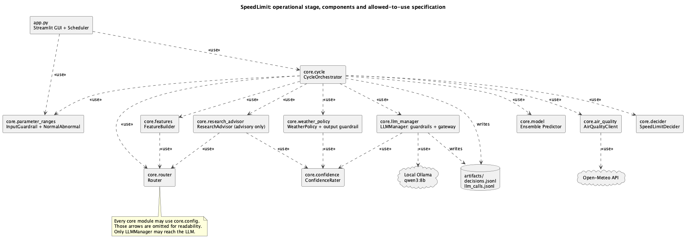
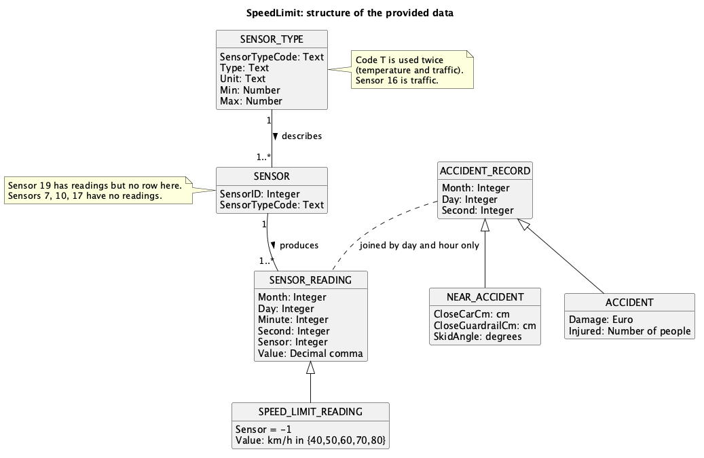
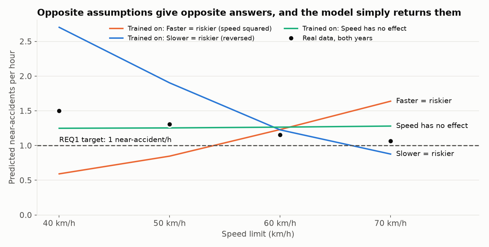
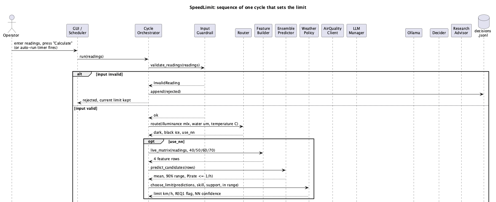

SPEC4 near-accident = skidding, or too close to a car or the guardrail10 requirement ambiguities fixed before coding, e.g. SPEC1 in millilux, sensors in lux
CoversSPEC4Privacy
Steps 02–03 · Data analysis
The data is clean but carries almost no signal: every limit averages above 1 near-accident per hour
9of 9
validation checks pass, after repairing sensor codes, hour offsets and a missing header
1.00
variance / mean of hourly counts: pure randomness
389of 744
January hours that are dark or icy: where the network is used
Dark or black-ice hours, Year N. Whiskers: 95% interval. Lower limits look riskier only through noise or confounding.
CoversSPEC1SPEC2REQ2REQ3REQ4
Steps 04–05 · Design in UML
Plain-code rules gate the AI, and a test enforces which of the 18 components may use which

Router
Plain code applies SPEC1 and SPEC2 and decides whether the network runs at all.
LLM boundary
Numbers in, one of five legal reductions out (0–40 km/h); only the LLMManager may call it.
Enforced
An architecture test fails if any import breaks the allowed-to-use rules.
CoversREQ1–REQ8
Step 06 · Implementation · CycleOrchestrator
The orchestrator runs every cycle in a fixed order, and each step covers a requirement
A small network learns from nine inputs, trained only on the 389 hours where it is used
9 inputs, sensor medians
Speed limit km/h, what we controllog illuminance (lux)Water on road (µm) · Temperature (°C)Wind (km/h) · Humidity (%)Traffic (cars/s)Dark? (SPEC1) · Black ice? (SPEC2)
Ready as an advisor today; automatic limits need a controlled trial first
What we delivered
A working system
From sensor readings to a published limit with its reasons, a GUI and an operator override.
Engineered to be trusted
335 tests, 7 UML diagrams, an architecture enforced by a test, an audit log.
An honest answer
This data cannot teach the effect of speed, so the system says so and asks the operator.
What automation would need
A controlled trial that varies the limit in dark and icy hours: ≈ 260 h per limit, about three Januaries. Meanwhile, expert rules with an operator in charge.
ShowsREQ1REQ2REQ3REQ7·8
Live demo
Four scenarios in the running system, in one minute
Runs locally: the app on localhost:8501, the LLM on Ollama.
Thank you
Questions?
The decision
Ready as an advisor today. Automatic limits need a controlled trial first;until then operators decide, with expert rules.
Backup: requirements · data preparation · network results in detail · research · Year N+1 · synthetic data · testing · lessons · EU AI Act Appendix: change requests · Router and LLM test cases · sequence diagram · requirement lists
Backup B1 · Requirements engineering
Requirements analysis exposed ten ambiguities before any code was written
16
stakeholder groups, from drivers to the works council
10
natural-language errors found and fixed
5
system requirements added (REQ4–REQ8)
11
non-functional requirements
Unit mismatch
SPEC1 in millilux, sensors in lux
Converted in one place: the Router.
Undefined scope
REQ1 “on average”: over what?
Road section and period still open.
Contradiction
“Predicted” or “current” air?
We use the worst forecast of the next 6 h.
Backup B2 · Data preparation
The files needed structural repairs; most of the expected value errors were absent

Class diagram: accidents link to sensors only by day and hour.
Found
Handled by
Type “T” = temperature and traffic
Sensor 16 is traffic
Sensor 19 undocumented
Treated as temperature
Sensors 7, 10, 17 empty
Not used
Accident hours 1–24, sensors 0–23
Shift by one hour
Year N+1 file has no header
Loader detects it
Licence plates
Dropped at load (privacy)
0.009°C
mean temperature error after cleaning a copy with injected faults
Backup B3 · Network result in detail
The network does not beat guessing the average
+0.4%
cross-validated skill over a constant predictor (20 folds, grouped by day)
Medium confidence needs +2 %. So confidence is always Low.
Backup B4 · Research cross-check
Research would go below 60 km/h on ice, and would not cut the limit for darkness or air alone
Research advisor (cited stopping-distance physics)Our system today
The research advisor is shown beside the result and never sets the limit.
Backup B5 · Retraining · Year N+1
Year N+1 repeats the sensor readings of Year N, and retraining on it adds no skill
−15 %, p = 0.0008, while every input stayed the same.
Input drift
KS = 0
on all 17 sensors: identical readings
Year N model on N+1
−0.5%
skill vs. the Year N average
Retrained on N+1
−1.1%
cross-validated skill
Conclusion
Same inputs, different outcomes. Retraining only shifts the base rate; it adds no skill.
Backup B6 · Synthetic data
More data is not the answer: synthetic data gives back whatever we assume

Assumed
Synthetic test
Real days
Faster = riskier
+12.8 %
−8.2 %
Slower = riskier
+20.6 %
−2.5 %
Both claim REQ1 is met in 389 of 389 hours, with opposite limits: 50 vs. 70 km/h.
Imitating the real data adds nothing: within noise even at 20× the data.
Backup B7 · Quality assurance
Test-first development: 335 automated tests, and at least five for every component
335
tests passing, including 5 live golden cases against the real LLM
Allowed-to-use rules enforced by a test · 7 UML diagrams
Caught real bugs: a missing review flag, scheduler timing, GUI issues.
Backup B8 · Lessons learned
Beat a baseline, distrust a single split, and guard a weak model hardest
01
Baseline first
0.982 means nothing until a constant scores 0.999.
02
One split misleads
+1.7 % on one split, +0.4 % cross-validated.
03
Run a control
A planted signal separates broken code from empty data.
04
Check the joins
An hour off by one creates or hides signal.
05
Guard weak models
“Lowest prediction” chose 70 km/h on icy nights.
06
Data needs information
Synthetic data returns its own assumptions.
Backup B9 · Responsible AI · EU AI Act
High-risk under the EU AI Act: the safeguards are built in, and humans stay in charge
Human in the loop · SpeedLimit32b
When
Who
Every review flag
Control-room operator approves
Any time
Operator overrides (on the loop)
Near-accident labels
Road-safety analyst checks
Retraining release
Data scientist + safety officer
Not in the loop: plain router rules and clear hours, where people only add delay.
Annex III (2): road-traffic safety component = high-risk
Art. 9Risk managementinput guardrails, 60 km/h fallbackBuilt in
Art. 10Data governancevalidation gate; one January on one road sectionKeeps it advisory
Art. 11–12Documentation, loggingUML, append-only audit logBuilt in
Art. 13–14Transparency, human oversightreasons, confidence, overrideBuilt in
Art. 15Accuracy, robustnessconfidence shown honestly as LowKeeps it advisory
Appendix A1 · Change requests · SpeedLimit21
Two change requests stay inside one component; electric cars break “one limit for everyone”
Change request
What changes
Why so little (or so much)
Impact
Some temperature sensors report Fahrenheit
Sensor mapping in the configuration and one conversion in the cleaner; retrain if the training data changes
Only the cleaner knows raw units; everything after it sees °C
Small
Only skidding counts as a near-accident
Call the labeler with skidding only, then validate and retrain
The label definition lives in one place
Small
Electric cars exempt from air-quality limits
The Decider returns two limits; cycle, GUI and log carry both; signs must show two limits; a new requirement
“One limit for everyone” was an architectural assumption
Large
Appendix A2 · Router test cases · SpeedLimit10b
The Router is tested at every boundary: 18 tests, all passing
Illuminance (mlx)
Water (µm)
Temp. (°C)
Why
Network used?
500
1000
−1
not dark; water not above 1000
No
500
1001
0
not dark; 0 °C is not below zero
No
500
1001
−1
black ice
Yes
499
1000
−1
dark
Yes
499
0
20
dark, warm and dry
Yes
100,000
5000
−10
black ice in daylight
Yes
100,000
5000
5
wet but above zero
No
Also tested
Dark at 0 and 499 mlx; not at 500 or 501
Black ice at (1001 µm, −1 °C) and (5000, −20); not at (1000, −1), (1001, 0), (1000, 0)
0.5 lux = 500 mlx
Both reasons reported together
Appendix A3 · LLM test cases · SpeedLimit10c
The LLM component is tested with golden ranges, guardrail cases and failure cases
Golden case
PM10 / NO₂ (µg/m³)
Expert range
Live LLM accepted
Clean air
20 / 40
0
0–10
Slight exceedance
55 / 90
0–10
0–20
Clear exceedance
120 / 250
20–30
10–40
Severe
400 / 500
30–40
20–40
Plausibility
0 / 0
0
0–10
Reductions in km/h. Live result: 5 of 5 in range. The rule-based fallback must meet the expert range.
Robustness case
Expected
Reply 15, −10, 80, true, “ten”, missing, not JSON
Rejected by output guardrail
Input −1, 2001, NaN, text
Rejected; LLM never called
Answers 20, 10, 20
20; Medium confidence
Answers 0, 10, 30 (tie)
30, the larger; Low
All invalid, or LLM down
Fallback + review flag
Every call
Logged with seed and reply
Appendix A4 · Sequence diagram · part 1 of 2
One cycle: input check, routing and the neural-network path

Appendix A4 · Sequence diagram · part 2 of 2
One cycle: air quality, decision, research advice, log and override
Appendix A5 · Architecture · training stage
Training stops at a validation gate if the data is not fit for use
Appendix A6 · Requirements engineering
Completed requirements, non-functional requirements and assumptions
Added system requirement
REQ4 Several reasons apply → the strictest limit
REQ5 Recalculate at least once per hour
REQ6 Invalid input or failure → never a silently higher limit; alert
REQ7 Operator can override at any time
REQ8 Every limit logged with reason and source
Quality
Non-functional requirement
Availability
A limit is displayed 99.99% of the time
Latency
New limit within 60 s of a reading
Reliability
One failed sensor alone cannot change the decision